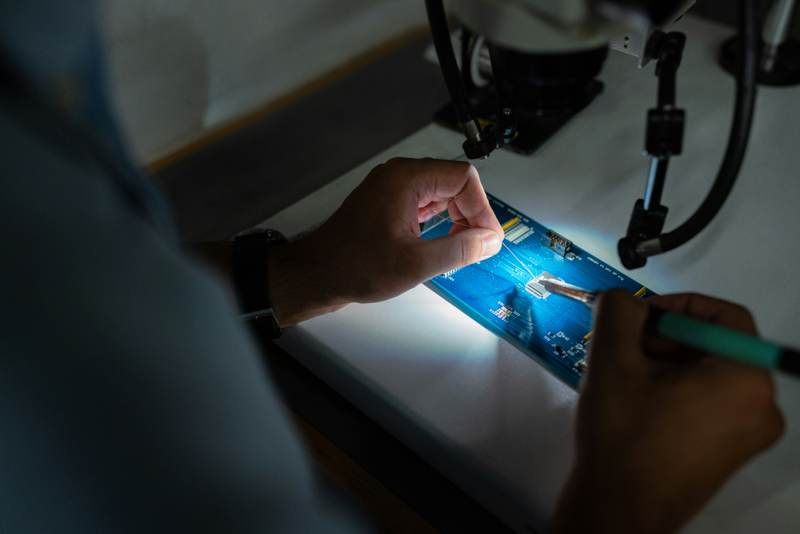

Computers are essential tools in our daily lives. When they start to fail, it can disrupt our work and personal tasks. Knowing the signs that your computer needs immediate repair can save you time and prevent data loss.
Slow Performance
One of the most common signs is slow performance. If your computer takes a long time to boot up or open applications, it may need repair. This can be due to hardware issues or malware.
Running a virus scan can help determine if malware is the cause. If the problem persists, it might be time to consult a professional.
Check for software updates and install them. If crashes continue, seek professional help to diagnose the issue.
Strange Noises
Unusual noises coming from your computer are a red flag. Grinding or clicking sounds can indicate failing hardware, such as a hard drive or cooling fan.
Ignoring these sounds can lead to more severe damage. It's best to have a technician inspect your computer as soon as possible.

Ensure that your computer is in a well-ventilated area. If the problem persists, it might be due to a failing cooling system.
Strange Pop-Up Messages
Strange pop-up messages can be a sign of malware. These messages often try to scare you into downloading malicious software.
Do not click on these pop-ups. Run a comprehensive virus scan and consider seeking professional help to remove any threats.
Internet Connectivity Issues
Frequent internet connectivity issues can also indicate a problem. If you experience constant disconnections, it might be due to a failing network card or malware.
Check your internet connection and run a virus scan. If issues persist, seek professional assistance.
Recognizing these signs can help you address problems before they become severe. If you notice any of these issues, it's best to consult a professional for a thorough diagnosis and repair. Taking action early can save you time, money, and data.